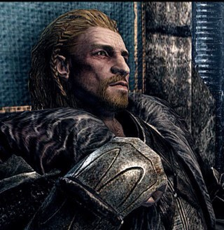

Stormcloaks win the war
4E 201 18th of Evening Star
After a fearsome battle for Solitude The Stormcloaks win over The Empire and execute General Tullius. Allied with the Dragonborn, Ulfric Stormcloak declares that will not wear the mantle of High King untill recognized. "... it was you who fought for Skyrim..."
4E 201 20th of Sun's Dusk
The Harbinger of The Companions, Kodlak Whitemane, dies4E 201 15th of Frostfall
The College of Winterhold discovers the Eye of Magnus, which nearly destroys the city of Winterhold4E 201 28th of Last Seed
Dragonborn emerges. Calling from The Greybeards heard all over Skyrim